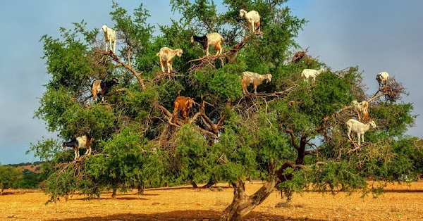
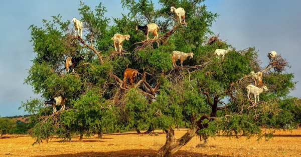

The Route
Five Epic Drives
The journey between destinations is just as spectacular as the destinations themselves. Every day brings completely different landscapes—this is why road tripping Morocco is unforgettable.
By the Numbers
Total Distance: 1,170km
Driving Days: 5 (out of 11 total)
Rest Days: 6 (no driving)
Longest Drive: 365km (~6 hours + lunch stop)
Shortest Drive: 85km (1.5 hours)
Car Rental: 6 days (April 1-6)
Why This Route Works
✓ Linear progression — no backtracking!
✓ Varied landscapes — mountains, desert, valleys, coast
✓ Manageable drives — longest is ~6h with lunch at Aït Benhaddou
✓ Strategic stops — N'kob breaks up long desert route
✓ Car-free finale — drop car before beach relaxation
✓ Recovery built in — pools, rest days, beach time
Tuesday Apr 1
🚗 Drive 1: Marrakech → Todra Gorge
Our longest and most scenic drive—through the High Atlas Mountains via the famous Tizi n'Tichka Pass.
The Route: Leave Marrakech's chaos behind and climb into the Atlas Mountains. Winding roads with hairpin bends, traditional Berber villages clinging to hillsides, dramatic mountain passes, and endless photo opportunities.
Major Highlights En Route


🛑 Recommended Stops
Tizi n'Tichka Pass (mandatory!): Stop at the summit viewpoint. Panoramic Atlas views, souvenir stalls, photo ops. 15-20 mins.
Aït Benhaddou + LUNCH (STRONGLY RECOMMENDED): Famous UNESCO kasbah, film location for Gladiator/Game of Thrones. Plan to arrive ~12:30-1pm for lunch at a restaurant with stunning kasbah views, then explore. Adds ~1.5 hours total. Only skip if severely delayed!
Valley viewpoints: Pull over at scenic spots—palm groves, kasbahs dotting valleys, photo opportunities everywhere.
Aït Benhaddou - UNESCO World Heritage Site (Don't Miss!)
This stop is strongly recommended - only skip if we're severely delayed. This ancient fortified village has been a film location for Gladiator, Game of Thrones, Lawrence of Arabia and more. A stunning example of traditional Moroccan architecture and one of Morocco's most iconic sights.
🍽️ Lunch at Aït Benhaddou
Timing: Arrive ~12:30-1:00pm (perfect for lunch!)
Plan: Lunch at a terrace restaurant overlooking the kasbah, then explore the site
Duration: ~1.5 hours total (lunch + exploring)
Depart: ~2:00pm → Arrive Todra Gorge ~5:00-5:30pm
Recommended Restaurants with Kasbah Views:
Restaurant Maktoub (Top Pick) - Rooftop terrace with panoramic kasbah views, highly rated
Chez Brahim - Excellent views + great tagines, salads, desserts
Auberge Azaddou Tamlalt - Right at the bridge to old town, incredible views, very affordable (~£9/meal)


Wednesday Apr 2
🚗 Drive 2: Todra Gorge → Merzouga Desert
Watch the landscape transform from rocky mountains to golden desert—the Sahara dunes appear on the horizon!
The Route: Head south from Todra Gorge through increasingly sparse terrain. Mountains give way to desert plains, green valleys become scattered oases, and suddenly—Erg Chebbi's massive dunes rising ahead.
Scenic Highlights


🛑 Stops & Timing
Leave Todra: After breakfast ~9-10am
Drive time: 2.5 hours with stops
Arrive Merzouga: ~1-2pm
Desert camp transfer: 3-4pm (camel trek or 4x4)
This is our shortest drive, giving us plenty of time to reach the desert camp for sunset!
Thursday Apr 3
🚗 Drive 3: Merzouga → N'kob
Remote, authentic Morocco—through southern valleys where tourists rarely venture.
The Route: Leave the Sahara behind and head west through the Tazzarine route. This is off-the-beaten-path Morocco: Berber villages, dramatic desert-mountain landscapes, and the first glimpses of N'kob's famous kasbahs.
This drive is why we chose N'kob as a stopover—it breaks up what would otherwise be a brutal 9-12 hour marathon from Merzouga to Taroudant!
What Makes This Special


🛑 The Reality Check
This is our "longest feel" drive even though Marrakech-Todra is longer distance. Why? More remote, fewer services, less developed roads in places.
Rissani stop (recommended): Ancient trading post, authentic souk if it's market day. Good restroom/fuel/food break. 20-30 mins.
Why N'kob matters: Arriving at the kasbah hotel with a pool after this drive = BLISS. Without N'kob stop, we'd be driving 9+ hours Merzouga → Taroudant (miserable!).
🦴 Fossil Shopping in Rissani
The Erfoud/Rissani region is world-famous for fossils - trilobites, ammonites, and more from when this desert was an ancient sea. Stop at Mezane Fossil Store for authentic specimens at fair prices.

Friday Apr 4
🚗 Drive 4: N'kob → Taroudant
Through the Drâa Valley and Anti-Atlas Mountains—some of Morocco's most beautiful and least-visited landscapes.
The Route: Wind through lush Drâa Valley palm groves, cross the Anti-Atlas via mountain passes, descend into the Souss Valley where Taroudant sits surrounded by orange groves. Completely different scenery from previous days.
Major Highlights

 


🌳 Watch For: Goats in Argan Trees!
This region is famous for argan oil production. Goats actually climb the argan trees to eat the fruit—it looks impossible but it's real! If we spot this, it's an iconic Morocco photo op.
Other highlights: Tizi n'Tagharat pass (beautiful mountain scenery), traditional Berber villages, lush valley contrasts with arid mountains.
Sunday Apr 6
🚗 Drive 5: Taroudant → Taghazout (via Agadir)
Our shortest drive—mountains to coast, ending with car dropoff and beach relaxation!
The Route: Leave the Anti-Atlas behind and descend toward the Atlantic. Drop rental car in Agadir city center (avoiding airport), then quick taxi to Taghazout (15 mins). Finally, CAR-FREE for 3 beach days!
The Final Leg


🎯 Why Drop the Car?
We DON'T need it for Taghazout: Beach, hotel, spa, gym, restaurants all walkable. No driving = total relaxation.
Saves money: 3 fewer rental days = ~£100 saved
Less stress: No parking, no car security worries, no driving. Hyatt has airport shuttle for departure (7:30am April 9).
Timeline Sunday: Leave Taroudant ~10am → Agadir by 11:30am → Drop car → Taxi to Taghazout → Check in Hyatt by 1pm → BEACH TIME! 🏖️
Practical Info
Driving in Morocco
🚗 What to Know
Roads: Main routes (N-roads) are excellent. Mountain roads are well-maintained but winding.
Speed limits: 120km/h highways, 60-100km/h other roads, 40-60km/h in towns. Cameras everywhere—obey limits!
Tolls: Minimal on our route (maybe £5-10 total)
Fuel: Plentiful on main routes. Tank up in major towns.
⚠️ Things to Watch For
Speed bumps: Unmarked in villages—slow down entering any town!
Animals: Goats, donkeys, sheep on roads (especially rural areas)
Mountain driving: Hairpins on Tizi n'Tichka—take it slow, enjoy views
Navigation: Google Maps works well. Download offline maps just in case.
Breaks: Stop every 90-120 minutes. Stretch, photos, snacks.
Why This Journey is the Trip
Many people fly between Moroccan cities and miss the entire point. The LANDSCAPE VARIETY is what makes Morocco magical:
🏔️ Day 1: High Atlas snow-capped peaks
⛰️ Day 2: Todra Gorge canyon walls
🏜️ Day 3: Sahara desert dunes
🏰 Day 4: Remote kasbahs and valleys
🌳 Day 5: Palm groves and mountains
🏖️ Day 6: Atlantic Ocean shores
Every single day looks completely different from the day before. That's why road tripping beats flying. The drives aren't obstacles—they're the experience.
And when we reach Taghazout's beach after all this? The relaxation will feel EARNED. The contrast will be perfect. The memories will be complete.